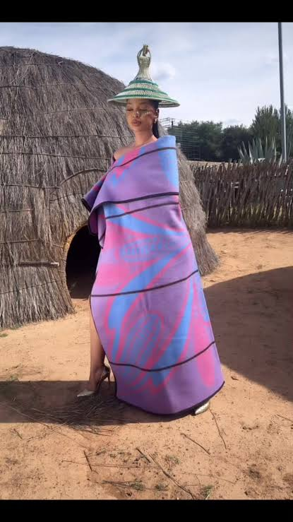

Lesotho is known as the Mountain Kindom offers stunning mountain landscapes and Sani pass, which provides breathtaking views and outdoors activities.Thabana Ntlenyana is the highest mountain Peak in the whole Southern Africa.
Lesotho has a rich and unique culturecentered on the Basotho people, who form the majority of the country's population. The culture blends traditional customs with modern influences while maintaining a strong sense of identity and community. You can experience traditional rural life untouched by mass modernization, meet local shepherds wearing traditional blankets and conical straw hats, and stay in community-run hubs like Malealea Lodge
Maletsunyane Waterfall is a 192-meter (630-foot) single-drop horsetail waterfall which makes it one of the highest waterfalls in Africa. It is located near the town of Semonkong in the Maseru District of Lesotho.You'd actually get the bestphotography and relaxation because it has natural views that most tourists love.
Katse Dam

Katse Dam is a well known dam in Lesotho that is located at Thaba-Tseka District,in Malibamats'o River.It was completed in 1996 and inaugurated in 1997,it serves as the centerpiece of the Lesotho Highlands Water Project. Visitors can take guided dam tours and explore nearby attractions such as Katse Village, Katse Botanical gardens and Mafika Lisiu Pass.
Maliba Lodge is the first and only 5-star luxury accommodation in Lesotho. It is located in the pristine Tsehlanyane National Park, in the heart of Lesotho and is known as the Mountain Kingdom. Maliba Lodge is a mere 4.5 hours drive from Johannesburg International Airport and in that short space, you are transported to another world. Maliba Lodge offers accommodation to suit all budgets from luxury mountain chalets to self-catering River lodges with the mountain view. Our award-winning lodge has a spa, Bana Kids Club, gourmet restaurant, bistro and amazing staff that cater to your every need. Prepare your Lesotho vacation with Maliba Lodge and enjoy another unique side of Africa.